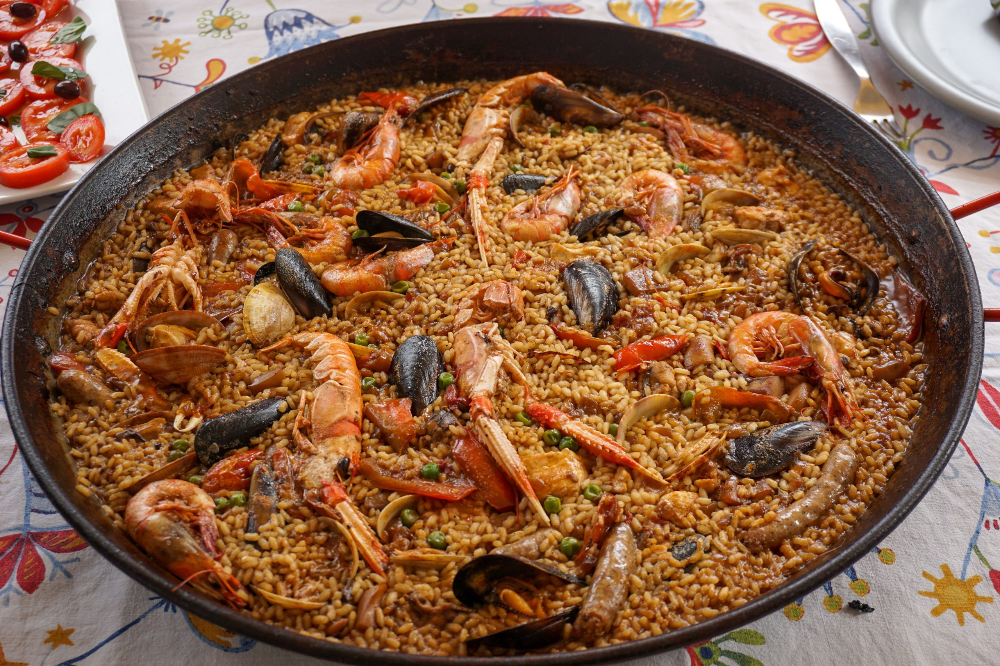

SPAIN
- Spain is located in southwestern Europe with population of more than 49 million.
- The capital of Spain is Madrid.
- Spain is famous for its festivals like La Tomatina (tomato fight) and Running of the Bulls in Pamplona.
- Spain is one of the world’s top tourist destinations, known for beaches, historic cities, and lively culture.
General info

Culture
Architecture

Spain’s architecture blends diverse influences - from Roman and Moorish styles to Gothic and modernist designs. Iconic examples include the Alhambra in Granada and Gaudí’s Sagrada Família in Barcelona. Its buildings reflect a rich history of cultural fusion and artistic innovation.
Traditional food
Spain’s traditional food is a delicious blend of flavours, ingredients, and regional specialties. From the iconic paella of Valencia to the small, shareable tapas enjoyed across the country, every dish tells a story. Rich in fresh produce, olive oil, and spices, Spanish cuisine offers a vibrant taste of the nation’s culture and heritage.